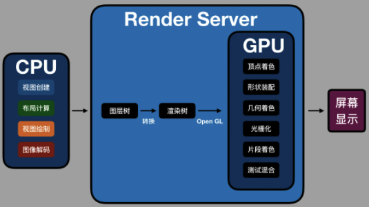

iOS
资料
苹果开发者账号的区别，发布方式In-House和Ad Hoc区别
ARC
LLDB
chisel：facebook开源lldb插件
LLDB支持插件开发：LLDB插件(三)
命令
expression somesth：执行某个表达式call somesth：调用某个方法bt 5：打印当前堆栈，且只打印5帧thread list：查看线程列表thread return 10：直接从当前方法中返回，且返回值为10c：继续n：下一步s：进入f：跳出frame select N：当前堆栈中，跳至第N帧frame variable ***：查看帧变量（不指定具体变量，查看所有本地变量）target variable ***：查看全局变量（不指定具体变量名，即可查看所有）image lookup -address 0x***：查看指定地址的信息image lookup -name：查找方法来源，可以查看所有库中指定名称的方法image lookup -type：查看某个类的所有成员breakpoint set -f ViewController.m -l 30：在指定文件中指定行打断点breakpoint set -n viewDidLoad：会在所有viewDidLoad上打断点breakpoint set -n "-[MobShareViewController viewDidLoad]"：在指定类的指定方法上打断点breakpoint delete 编号：删除指定断点（不指定编号即清除所有）breakpoint set -f MOBQQViewController.m -l 50 -c "parameters != nil"：在指定位置添加符号断点，判断条件是c参数之后的字符串breakpoint list：查看断点列表breakpoint disable/enable 2：禁用/启用指定断点watchpoint set variable b：设置观察点，监听b变量，当其有改变时，会断下来watchpoint set expression 0x7ffee1c1f0fc：直接对指定内存地址进行监听watchpoint list：查看观察点watchpoint delete 编号：删除观察点（不指定编号即清除所有）target stop-hook command：可以在断点断下来之后，就自动执行指定的commandtarget stop-hook list：列出所有的hook指令
观察点，有软件/硬件实现之分。软件实现的话，执行速度比正常执行要慢非常多（上百倍）。硬件观察点，速度基本不受影响。目前Xcode调试也支持了硬件观察点，设置观察点时就可以看到相关信息：
Number of supported hardware watchpoints: 4
别名
| 原名 | 别名 |
|---|---|
| p | |
| expression | expr |
可以自定义别名：
command alias pb thread backtrace：即可将pb定义为thread backtrace
多媒体
metal在模拟器上是使用不了的
动态库 & 静态库
静态库：编译时跟App链接在一起，启动时间会更少、安装包大小更小。
动态库：动态库分两种，一种是系统的tbd、dylib。一种是.framework。
- tbd是系统使用的，真正的动态库。
- framework是动态加载到进程内存空间的，更多是为了同一进程内的多个目标使用。比如缩主和Extension可以共享。
- framework可以使用dlopen来加载。
- .tbd 其实是一个YAML本文文件，描述了需要链接的动态库的信息。主要目的是为了减少app 的下载大小。
崩溃
- Crash Sdk是通过注册异常信号来捕获异常的。
- 捕捉到异常再用
backtrace接口来获取当前堆栈信息
日志
NSLog
本质也是ASL(Apple System Logger)
aslMessageReceived接收日志，asl_get解码日志。
Runloop
是一个运行循环，有事情时处理事情，没有事情时休眠。
作用：
- 保持程序的持续运行g
- 处理各种事件
- 节省CPU资源，提高程序性能
特点：
- 一个线程对应一个Runloop
- 子线程Runloop的创建是发生在第一次获取时，Runloop的销毁是发生在线程结束时
- 一个Runloop中包含多个Mode
- 每个Mode包含若干个Source/Timer/Observer
Source主要用来跟其它线程互发消息使用
Observer可以监听：即将进入loop、即将处理timer、即将处理Source、即将进入休眠、刚从休眠中唤醒、即将退出loop这些事件。
performSelector:异步执行某个接口时，其实现也是通过添加timer来做的。
Runloop类型：
- NSDefaultRunLoopMode：默认的模式
- UITrackingRunLoopMode：界面跟踪，用于scrollView拖拽滑动
- NSRunLoopCommonModes：综合模式
示意图：（来源：https://www.jianshu.com/p/d8c3a65b6e19）

Timer与Runloop结合的使用：
- 子线程中启动Timer，需要手动将其加入到当前runloop中
- 如果当前线程的runloop还没有启动过，还需要调用一下
run接口 - 子线程释放Timer也需要注意，
timer.invalidate()的调用线程要与Timer的创建线程是同一个
Xcode
Xcode中的Do no embed等作用：https://stackoverflow.com/questions/57687170/do-not-embed-embed-sign-embed-without-signing-what-are-they-what-th
汇编调度：Xcode->Debug->Debug workflow->Always Show Disassembly
| 命令 | 作用 |
|---|---|
xcrun xctrace list devices | 列出所有可用设备 |
open -a Simulator | 启动默认模拟器 |
内存
缺页中断类型
- Hard Page Fault：物理内存中没有对应页，需要从磁盘读取
- Soft Page Fault：物理内存中存在对应页，其它进程可能正在处理。只要用MMU建立映射
- Invalid Page Fault：会触发SIGSEGV异常，导致应用中止。
内存布局

内存压缩
在iOS上，虚拟内存机制，并不是跟磁盘进行交换。而是将最久不使用的内存（LRU）进行压缩。当内存需要使用时，再解压。
FOOM
即前台内存占用过多被杀，检测方法：
1.App没有升级
2.App没有调用exit()或abort()退出
3.App没有出现Crash (依赖于自身CrashReport组件的Crash回调)
4.用户没有强退App
5.系统没有升级/重启
6.App当时没有后台运行（依赖于ApplicationState和前后台切换通知）
7.App出现FOOM （依赖于ApplicationState和前后台切换通知）
内存问题情况
- leaked Memory：有retain，但没对应release导致的（MRC容易出现）
- Abandoned Memory：循环引用导致的
- Zombies：即僵尸对象，已经释放了，但仍然可能被使用
图形处理
使用渐进式 JPEG 来提升用户体验：渐进式图片是需要图片本身支持
图片所占内存的大小与图片的尺寸有关，而不是图片的文件大小
CPU & GPU
在图形处理过程中，CPU的作用是将相应需要展示的内存数据准备好
GPU是拿这些内存数据，转化为可以直接渲染的数据。其中有多步：
- 3D坐标转化为2D坐标
- 2D坐标转化为实际像素
- 顶点着色器
- 形状装配
- 几何着色器
- 光栅化
- 片段着色器
- 测试与混合
原生渲染
- 更新视图树，同步更新图层树
- CPU计算要显示的内容（包括布局计算、图像解码等），然后转至Render Server
- 数据到达Render Server后，按照图层树中图层顺序、RGBA值等等，转成渲染树给OpenGL / Metal
- Render Server调用GPU进行处理
前三步，被称为Commit Transaction

黑暗模式适配
注意问题
要关掉黑暗模式，需要在info.plist中添加如下KV值：
Key: UIUserInterfaceStyle
Value: Light
注意：
工程中如果有Extension，则Extension的配置文件也需要改，否则扩展还是默认会打开黑暗模式。
但是经测试，Today Extension 即使关掉了黑暗模式，背景仍然会以黑暗模式的形式来展示。（为了防止系统级体验不好，也是合理）。所以Today Extension最好适配黑暗模式
Universal Links支持
关注点
- 一个应用是可以支持多个Universal Link的
apple-app-site-association可以放在https://domain/apple-app-site-association也可以放在https://domain/.well-known/apple-app-site-association，建议放在.well-known路径下，而且苹果会优先下载这个位置的配置文件apple-app-site-association中details字典搜索顺序是从上至下，把希望优先匹配的内容放在前面- path匹配是支持*和?的，*表示匹配任意字符，?表示匹配一个字符，?*表示匹配至少一个字符。
Scheme
canOpenURL接口
- 仅iOS9之后受限
- 使用Xcode7及以后版本编译：对于注册的scheme数量不限制，但是只有前50个调用canOpenURL的，返回值才是对的，从第51个开始，canOpenURL返回的值不保证是对的
- 使用Xcode6及以前版本编译：canOpenURL仅能调用50次，超过50次后就会返回false（应用重装或升级可以重置计数）